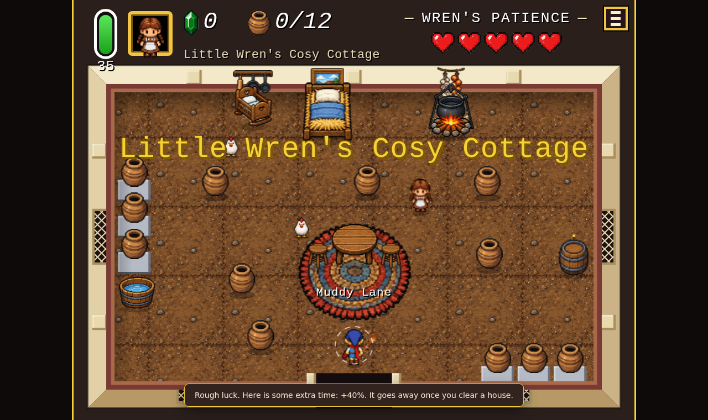

Those Pots Need Smashing
A rentalcopy game · press kit

About
You owe the Old Man a great deal of gem.
The villagers keep them in their pots.
So you walk into their houses and smash everything!
An incremental in the look of a 16-bit top-down adventure. Every house is a different room with a different villager in it, and they are home. Their hearts are their patience, not your health. The pots are their savings. Break enough and they go from confused, to angry, to crying, to fainted, which is how you know the house is clear.
Walk and swing. The hero follows your mouse, you click to swing. Fast smashes build a chain that pays more.
Spend it at the Old Man's. A tree of about forty upgrades in six branches: the swing, time, pot supply, special pots, potboys, fairies and hens.
Fact sheet
- Developer
- rentalcopy
- Platform
- browser, on itch.io
- Status
- playable now on itch.io
- Available since
- 2026-10
Where to play
itch.io
Everything in one file
Download all images (3.9 MB)
Screenshots, store art and the cover. The trailer is a separate download below.
Screenshots
More video on request
- trailer
- villager pov
- dont hit the chicken
- day one vs hour one
- can you see it
- owe a man for a sword
- intro what is it
- intro first minute